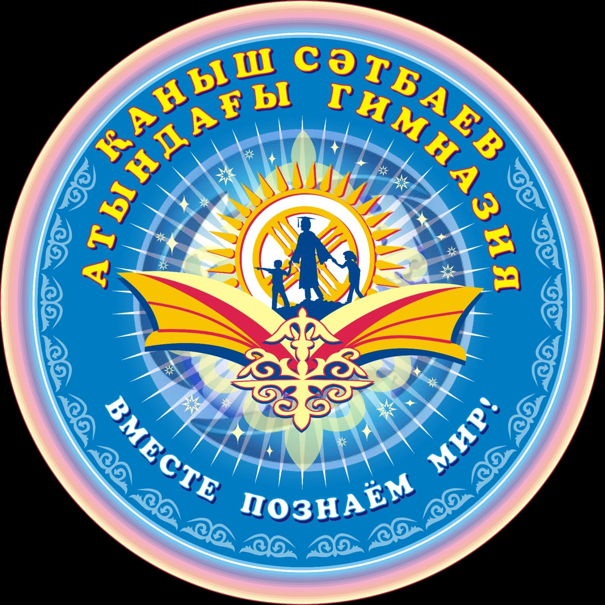

01 / ИНТЕРЕСЫ
Климов
Люди, техника, природа, знаки или творчество — что привлекает тебя больше?
20 пар ситуаций↗

ГИМНАЗИЯ ИМЕНИКуда поступать? Что тебе интересно?
Давай искать ответы вместе.
Узнай свои интересы, открой новые направления
и наметь свой путь после школы.
◈ Прогресс сохраняется. Продолжишь, когда будет удобно.
От интересов — к личным предпочтениям.
Каждый этап помогает увидеть себя чуть яснее.
Люди, техника, природа, знаки или творчество — что привлекает тебя больше?
Исследуй свои профессиональные интересы и найди близкую тебе среду.
Как ты действуешь, общаешься и подходишь к решению повседневных задач?
Что помогает тебе восстанавливать силы, воспринимать новое и принимать решения?
Первый вариант: авторские ознакомительные анкеты по моделям Климова, Голланда (RIASEC), DISC и типологических предпочтений MBTI. Это не официальные диагностические инструменты.
Соберём ответы в общий профиль и предложим несколько направлений, которые стоит изучить ближе.
Что тебя привлекает и какие предпочтения проявились в ответах.
Идеи специальностей и профессий с объяснением, почему их стоит рассмотреть.
Небольшие действия, которые помогут проверить интерес на практике.
Тебе не нужно выбирать всю жизнь.
Достаточно выбрать следующий шаг.